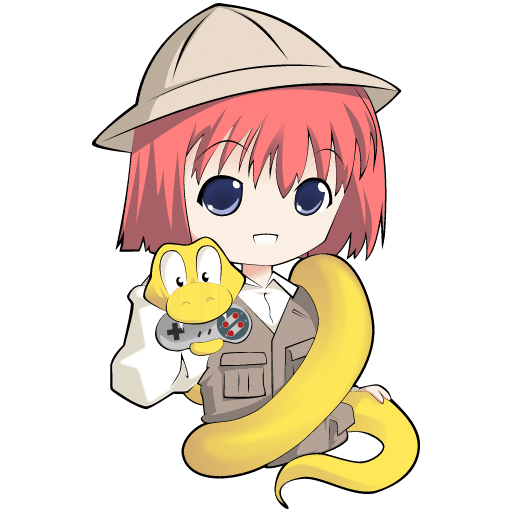
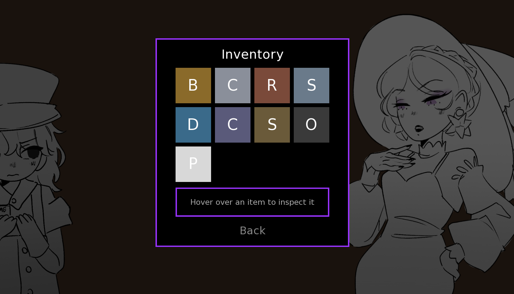
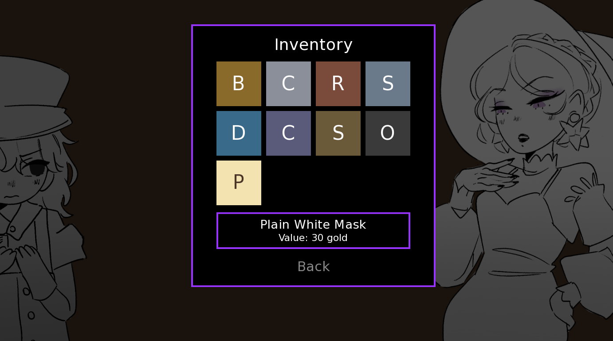
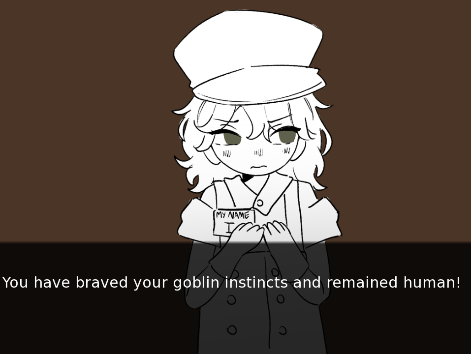
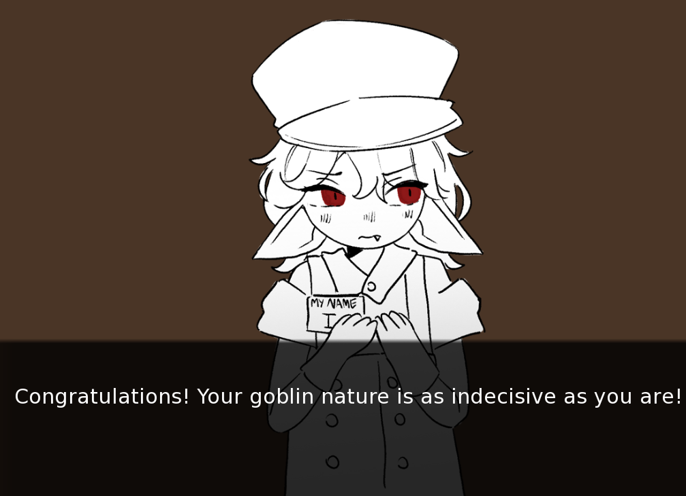
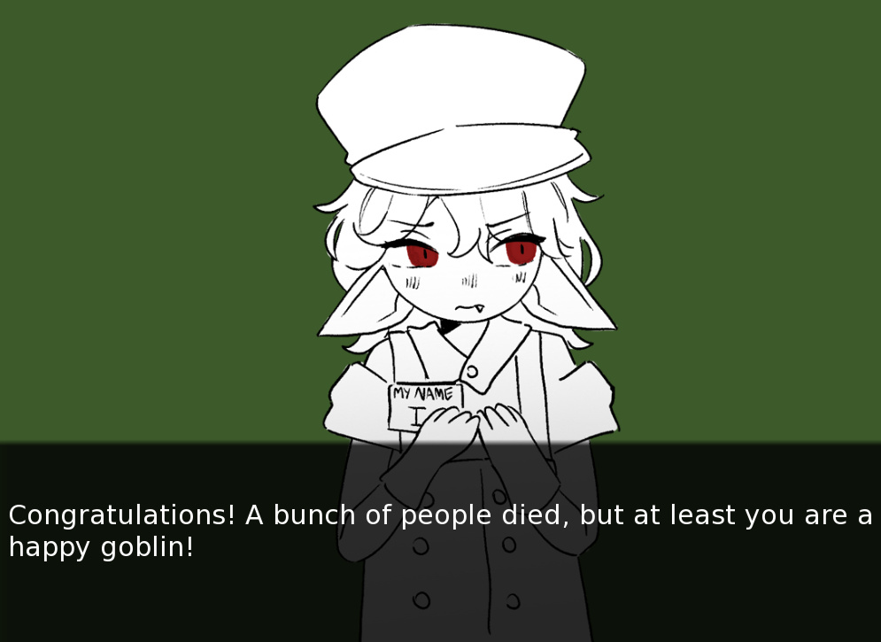

Homebrew Antiques
Tools used

Ren'py
Mechanism: The Inventory
This was the first time I ever touched Ren'Py. Not being a fan of narrative games, I decided to
give the game more interaction by implementing an inventory system, and I made sure that
each possible player action got an appropriate reaction from the NPCs.


The items are not hardcoded in the inventory, but modular, so they can easily be exchanged by modifying a list.
The inventory also has a box that shows the name and value of each object.
Mechanism: The Goblin Instincts
The story revolves around a shopkeeper who gets cursed with goblin instincts and desires more and
more money and shiny objects as the game progresses. To reflect this, I implemented a goblin meter
that can go up or down with each player choice.
The end of the game hinges on this meter, with 2 bad endings and 1 good ending.


